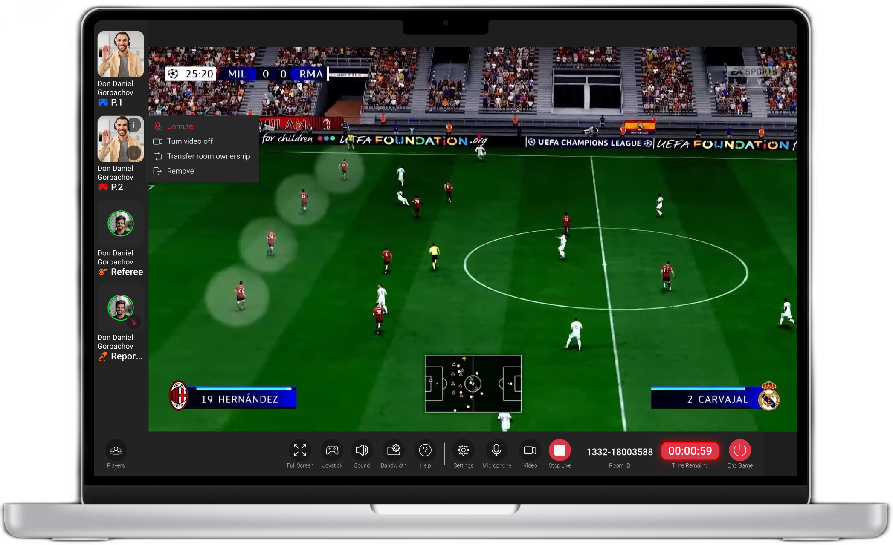
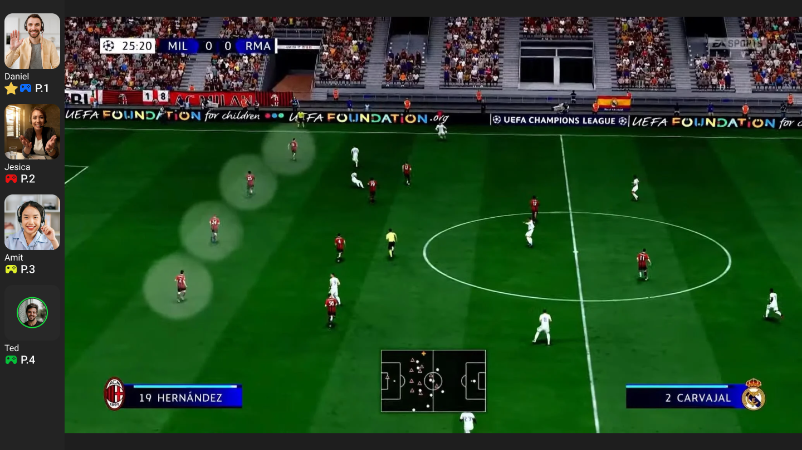
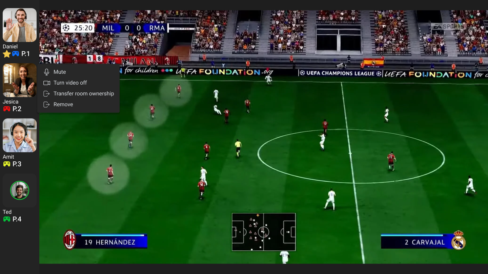
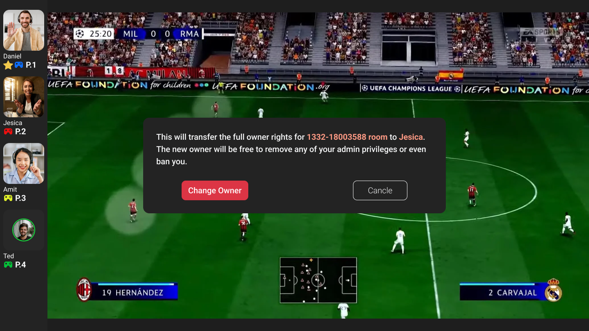
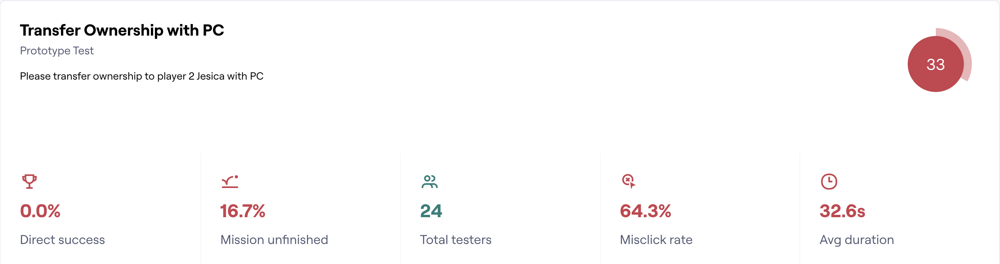
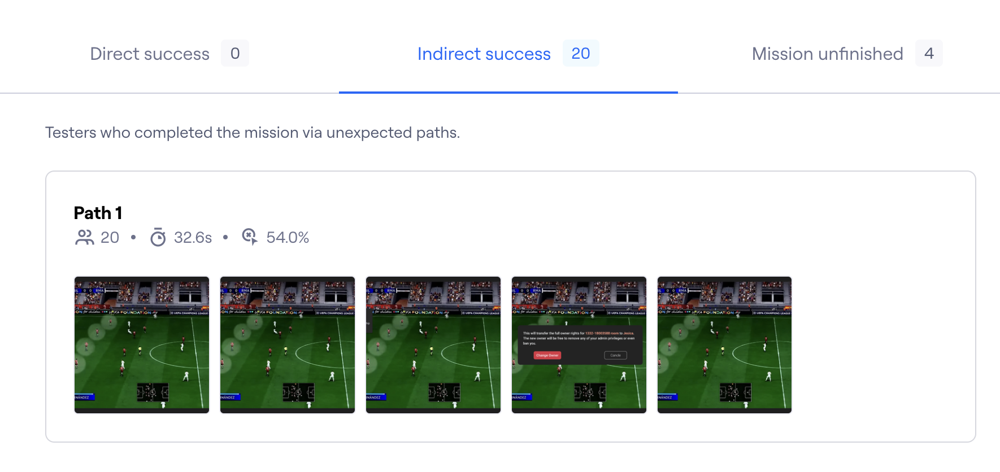
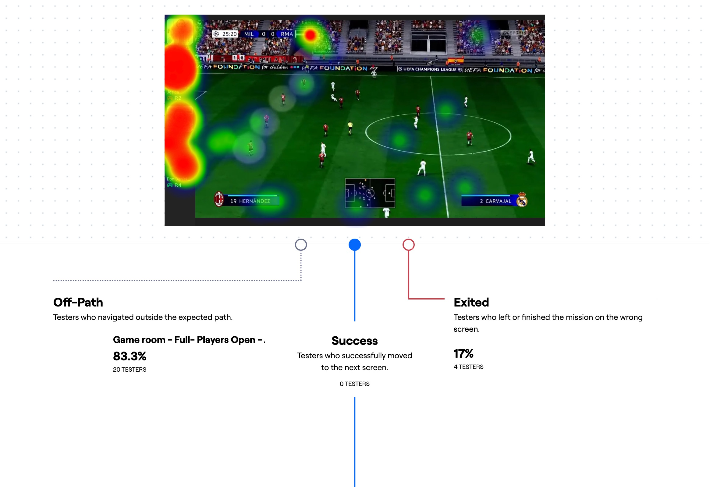
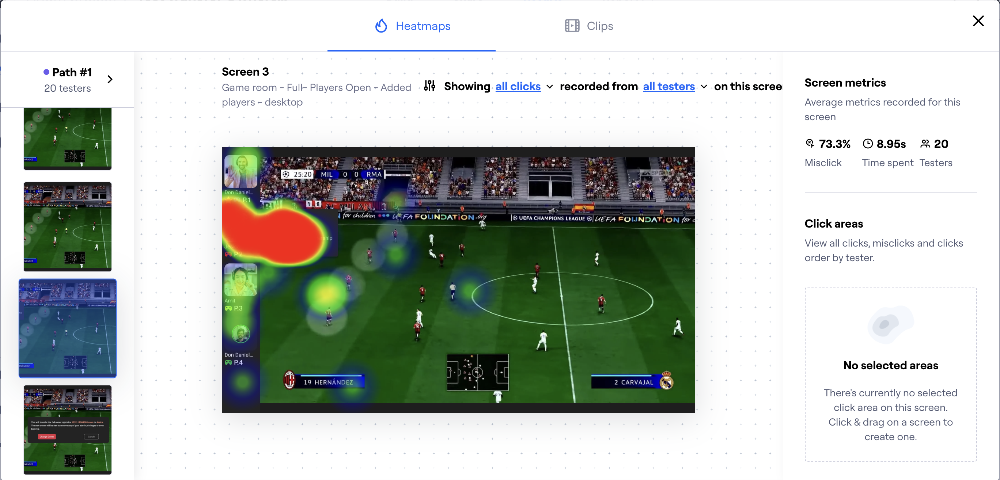
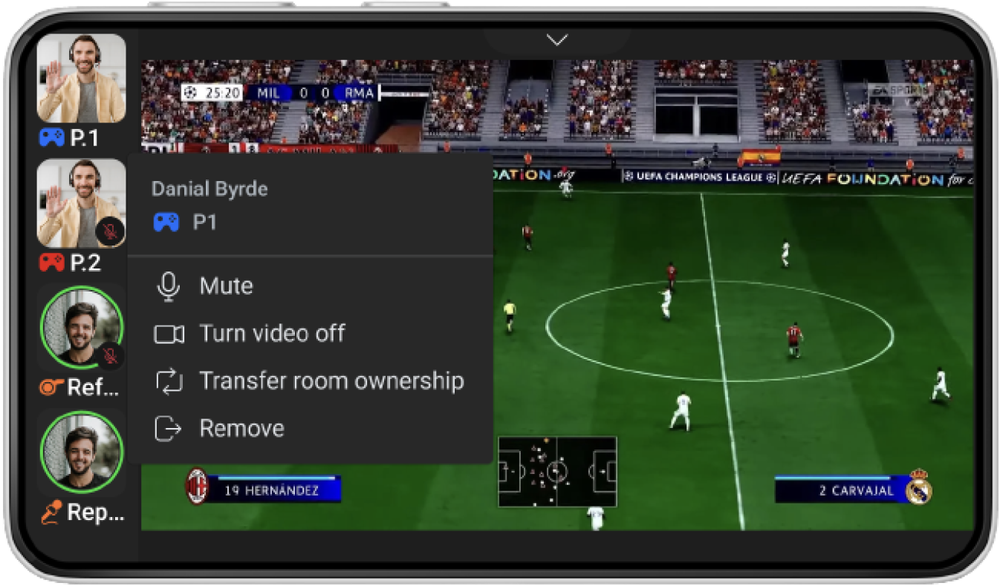

Arium · Product design case study
From Hidden Right-Click to Visible Action
Testing and revising ownership transfer in Arium's multiplayer Game Room
A Game Room administrator needed to transfer ownership before leaving. My first design put the action inside a right-click menu—but testing showed that people struggled to discover where to begin.
I responded by adding a visible menu trigger to the participant card and carrying the interaction into the mobile design. The preserved work stops at that revision, so this is a story about using evidence to change a design direction, not a claim of measured improvement.

01
Ownership Transfer Had No Visible Starting Point
Arium's multiplayer Game Room placed participant controls beside the game. The Product Owner asked me to add a way for the current administrator to pass ownership to another player before leaving.
This was a focused interaction within an existing feature, rather than a redesign of the whole Game Room. I was responsible for framing and designing the transfer flow, testing it, interpreting the results, and revising the desktop and mobile designs.

I framed the task around one question:
The transfer also needed a deliberate confirmation. The design named the recipient, explained that they would receive owner rights, and let the administrator confirm or cancel. This reduced the chance of treating a meaningful permission change like an ordinary menu action.
02
My First Design Kept the Interface Clean—but Hid the Action
My initial flow used a participant's context menu. The administrator would right-click the player's card, choose “Transfer room ownership,” and confirm the change.
I assumed this would keep the busy Game Room uncluttered while grouping participant-management actions together. The weakness in that assumption was simple: people had to know that the right-click menu existed before they could see any of those actions.
I built the interaction quickly using the existing interface. The screens included familiar components and realistic imagery, but my goal at this stage was to test the path before spending more time refining components.


03
Testing Challenged My Right-Click Assumption
I prepared and ran a task-based Maze test with 24 participants. The task asked them to transfer ownership to player 2 using a PC.

Test result — 24 participants
0
direct successes
20
indirect successes
4
unfinished attempts
Maze classified indirect successes as participants who completed the task through unexpected paths. Most people eventually finished, but nobody used the intended direct route. The result did not mean that the whole flow was unusable; it showed that the expected path was not clear.

I reviewed the paths and heatmaps to locate the difficulty. The first-screen evidence showed participants moving away from the intended route, while another preserved view showed activity concentrating around the participant menu once it was open. Together, these views pointed back to the first action: discovering the right-click entry point.


04
A Visible Trigger Addressed the Failure Point
I added an ellipsis button to the desktop participant card. This gave the menu an explicit entry point while keeping ownership transfer grouped with the other participant actions.
The change responded directly to the test finding. It did not add the transfer action permanently to every card, and it no longer relied only on users knowing a desktop-specific right-click convention.
For the mobile landscape design, I carried the same participant menu and transfer action into the responsive Game Room layout.

05
The Design Changed; Validation Remained Open
Testing gave me a concrete reason to revise the interaction before carrying the hidden-only pattern into the final designs. I could trace the change from an initial assumption, through observed behaviour, to a more explicit design direction.
This work changed how I think about visual simplicity. Removing visible controls can make an interface look quieter, but it can also make an important action harder to find. Testing the interaction early helped me see that trade-off before investing further in the components.
If I revisited the work today, I would retest the visible trigger against the original path, compare completion and error behaviour, and include touch, keyboard and accessibility checks.